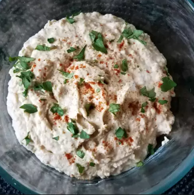

Hummus

Description
This homemade hummus is smooth, creamy,
and packed with rich, nutty flavor.
Made with chickpeas, tahini, lemon juice, and garlic, it blends into a
perfectly balanced dip that's both simple and delicious.
Light, velvety, and versatile, this hummus pairs well with pita, veggies,
or as a spread. Whether for snacking or entertaining, it’s a quick,
healthy option that always impresses!
Ingredients
- 1 (15 ounce) can chickpeas, drained
- 3 tablespoons tahini
- 2 tablespoons olive oil
- 1 tablespoon fresh lemon juice
- ¼ cup water
- 3 cloves garlic, crushed
- ½ teaspoon ground cumin (Optional)
- 1 pinch paprika
- 1 sprig fresh parsley, chopped
Steps
- Place chickpeas, tahini, olive oil, lemon juice,
water, garlic, and cumin into a food processor and
process until smooth, about 1 minute.
- Transfer to a bowl and sprinkle top of hummus with paprika and fresh parsley.
Home